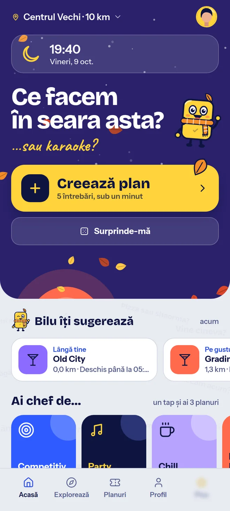
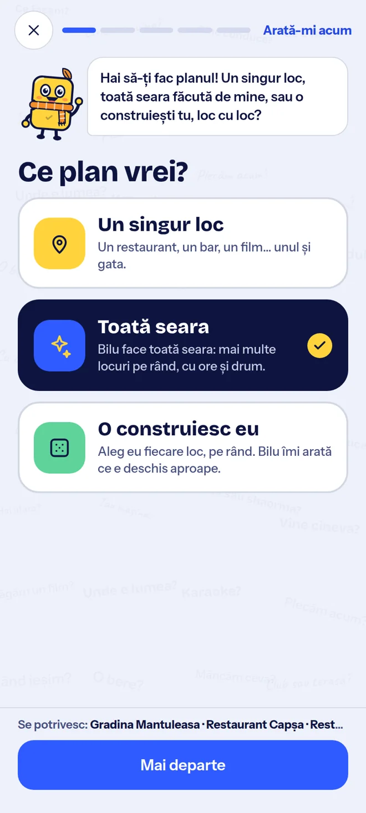

Un loc sau toată seara
Alegi o oprire, o seară cu mai multe locuri sau construiești tu planul, pas cu pas.
Un loc nou. O seară întreagă. Sau ceva spontan cu gașca. CeFaci te ajută să treci de la idee la ieșire.
Bilu pregătește planul. Tu pregătește gașca.

Clientul Android este în testare. Business și Admin sunt următoarele etape.
DIN „NU ȘTIU” ÎN „FACEM AȘA”
Spui de ce ai chef, cu cine ieși și cât vrei să cheltuiești. Bilu caută variante potrivite pentru tine.
Alegi o oprire, o seară cu mai multe locuri sau construiești tu planul, pas cu pas.
Planuri pentru tine, în doi sau cu gașca. Invitați prietenii și votați împreună.
Păstrezi planul, bifezi ieșirile și aduni XP și ștampile în carnetul tău.
Imagini din versiunea în dezvoltare. Unele detalii se pot schimba până la lansare.

Tu alegi cum începe seara.
PAS CU PAS, PÂNĂ LA LANSARE
Stadiul reflectă versiunea verificată a proiectului. Data lansării va fi anunțată aici.
Aplicația Android are deja baza experienței. Acum verificăm scenariile reale și finisăm detaliile.
Un spațiu pentru localurile partenere, construit după ce stabilizăm aplicația pentru clienți.
Partea de administrare care va ajuta platforma să funcționeze bine, dincolo de ecranul telefonului.
Fără o numărătoare inversă inventată. Următoarea veste bună apare aici.
PÂNĂ ATUNCI...
CeFaci este în etapa de testare. Descărcarea publică va fi disponibilă aici când versiunea de lansare este pregătită.
Prima versiune este pregătită pentru București și Ilfov. Începem local, cu locuri și planuri relevante pentru zona ta.
Prima versiune pe care o pregătim este pentru Android. Pentru iPhone nu avem încă o dată anunțată.
CeFaci Business este o etapă următoare. După testarea aplicației pentru clienți, vom anunța aici cum se pot alătura localurile.
Revino pe cefaci.app. Actualizăm această pagină pe măsură ce etapele sunt verificate și pregătite pentru lansare.